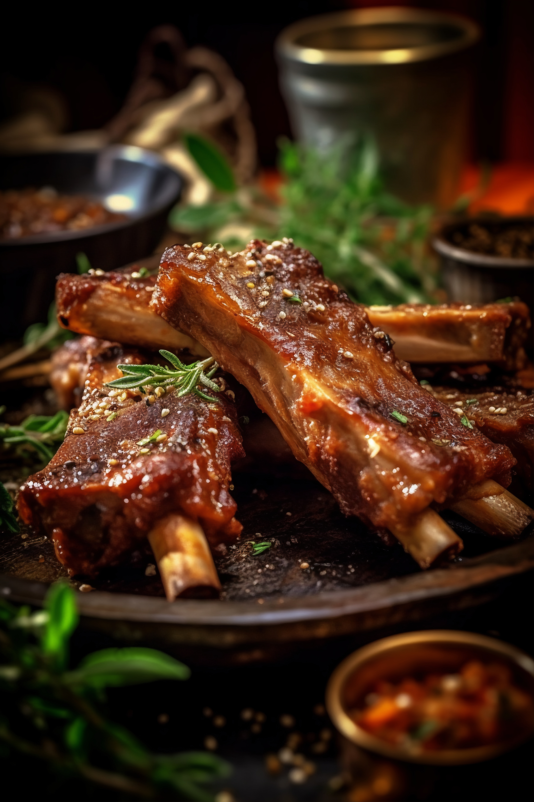

Barbequed Ribs

Description
Today, we will cook a delicious barbequed ribs at home without much hassle, using ingredients that you can found in your local mart.
Ingredients
- 4 pounds of pork spareribs
- 1 cup of brown sugar
- 1/2 cup of chile sauce
- 1/4 cup of ketchup
- 1/4 cup of soy sauce
- 1/4 cup of Worcestershine sauce
- 1/4 cup of rum
- 2 cloves of crushed garlic
- 1 teaspoon of dry mustard
- 1 dash ground black pepper
- cookin spray
Steps
- Preheat the oven to 350 degrees fahrenheit or 175 degrees celsius.
- Cut the ribs into small portions and wrap them in a medium thick foil
- Put them in the oven and cook them for 1 1/2 hours. After that, drain the drippings.
- In a bowl, mix brown sugar, chile sauce, ketchup, soy sauce, Worcestershine sauce, rum, garlic, mustard, and pepper, and then, the ribs are coated with the sauce and left to marinate at room temperature for a hour
- While waiting, heat the grill to medium heat. Place the grate 4 inchesabout the heat and apply the cooking spray to the graill.
- Cook the marinated ribs on the grill for 30 minutes.
Home